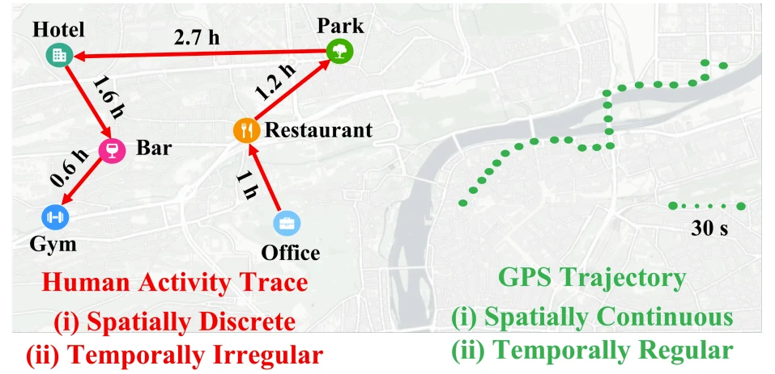
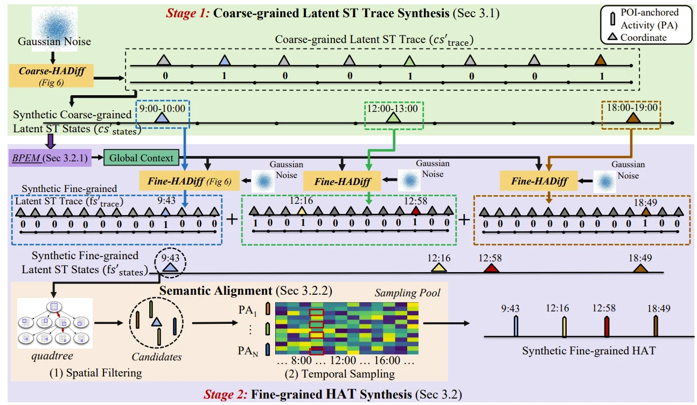
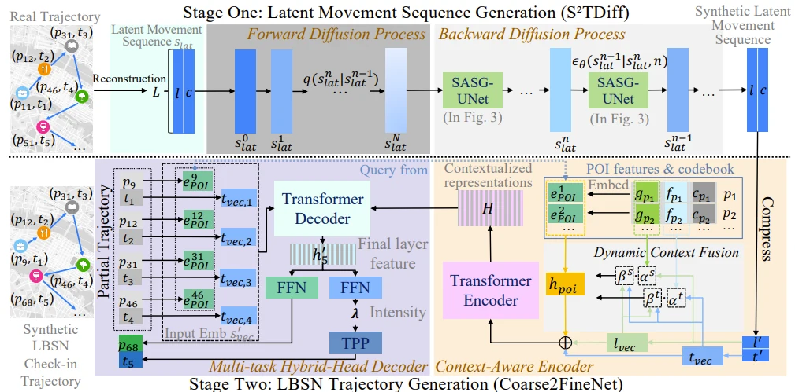

Limited access
Proprietary ownership keeps valuable mobility observations out of reach for much of the research community.
NSF-funded cyberinfrastructure2024–2027
MobilityNet is a cyberinfrastructure for cross-domain mobility data generation and sharing. It combines generative AI with privacy protection to help researchers study mobility without exposing individual traces.
MobilityNet research pipeline
01 / Why MobilityNet
Most mobility data remains proprietary or sensitive. Even when data owners share records for social good, researchers must address quality, interpretation, and privacy before the data can support reliable science.
Proprietary ownership keeps valuable mobility observations out of reach for much of the research community.
Incomplete, noisy, and fragmented records make cross-domain analysis difficult.
Raw locations and timestamps rarely explain the activity or purpose behind a trip.
Detailed movement traces can reveal sensitive information about individuals and communities.
02 / Framework
The framework connects data integration, contextual modeling, privacy-aware generation, and evaluation.
Align heterogeneous signals from transportation, communication, payment, and urban systems.
Recover activity context and meaningful behavioral patterns from sparse mobility records.
Use diffusion models and differential privacy to synthesize useful mobility traces.
Measure utility, fidelity, fairness, and privacy before releasing research assets.
Data representations
MobilityNet models both human activity traces, which are spatially discrete and temporally irregular, and GPS trajectories, which are spatially continuous and sampled at regular intervals.

03 / Research highlights
MobilityNet advances synthetic mobility data while examining privacy risks in location-based AI systems.
Generates coarse-grained latent states, then synthesizes fine-grained activities with spatial filtering, temporal sampling, and semantic alignment.
Read the ACM IMWUT / UbiComp 2026 paper ↗
Generates a latent movement sequence, then reconstructs a fine-grained check-in trajectory with contextual POI representations.
Read the AAAI 2026 paper ↗
Introduces data extraction and membership inference attacks to examine whether POI recommendation models expose visited locations or training participation.
Read the ACM KDD 2024 paper ↗Privacy auditing for location-based recommendations
Research enabled
Model population movement and contact patterns during public health emergencies.
Study check-in behavior, recommendations, and urban activity patterns.
Estimate spatial demand to support network planning and service coverage.
Connect mobility demand with transportation and public service capacity.
Support evacuation analysis and response planning under disruptive events.
04 / Data catalog
Explore curated real-world datasets and synthetic releases from MobilityNet research.
Data availability and third-party terms vary by source. Follow each dataset link for current access conditions and documentation.
05 / Project outputs
Browse reusable research code and publications developed through MobilityNet.
06 / Team
Researchers across computer science, engineering, transportation, and urban planning.

Extended research network
07 / Feedback
Share a dataset request, research use case, or suggestion for MobilityNet. Your message will be forwarded to the project PI.